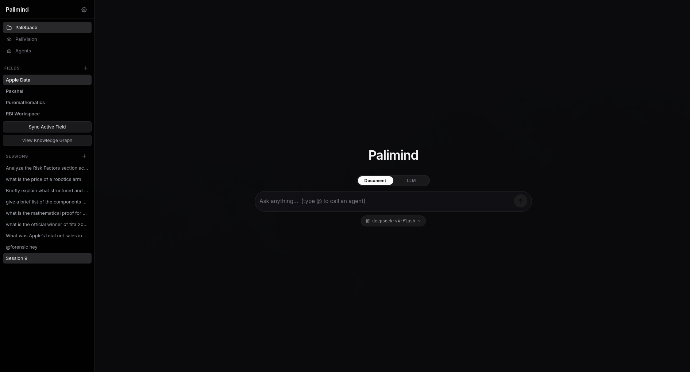

PaliSpace · 01
RAG Workspace
Point PaliMind at any folder and index every document into a local vector store you can query in natural language.

Capabilities
- Multimodal indexing — PDF, DOCX, PPTX, XLSX, images (OCR), Markdown, code, CSV and video (Whisper transcription).
- Local vector store — TurboVec 4-bit quantized embeddings stored in SQLite. No external database.
- Hierarchical memory — short-term, mid-term and long-term episodic memory embedded and retrieved for conversation context.
- Knowledge graph — entities and relationships extracted from documents, queryable and visualized.
- Summarisation — per-file summaries, financial fact extraction and timeline extraction at index time.
- Web search — DuckDuckGo search and Scrapling page extraction for live context.
- Session management — multiple persistent chat sessions per workspace with summaries.